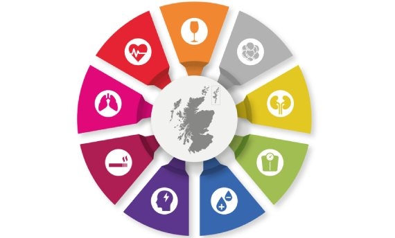

News · July 2023
NCD Alliance Scotland policy roundtable: providing evidence on non-communicable diseases for action on the commercial determinants of health-harming products

Members of our research team joined a roundtable discussion on 25th July 2023, organised by the NCD Alliance Scotland on tobacco and related products. The NCD Alliance Scotland is a coalition of health organisations working together to reduce the health burden of non-communicable diseases through action on alcohol, tobacco and high fat, salt and sugar products.
The session sought to inform a 10-year vision for public health prevention in Scotland. This vision intends to take a forward-looking and ambitious approach to reducing harm from NCDs through action on the commercial determinants of health, and which could be adopted by the Scottish Government.
All news